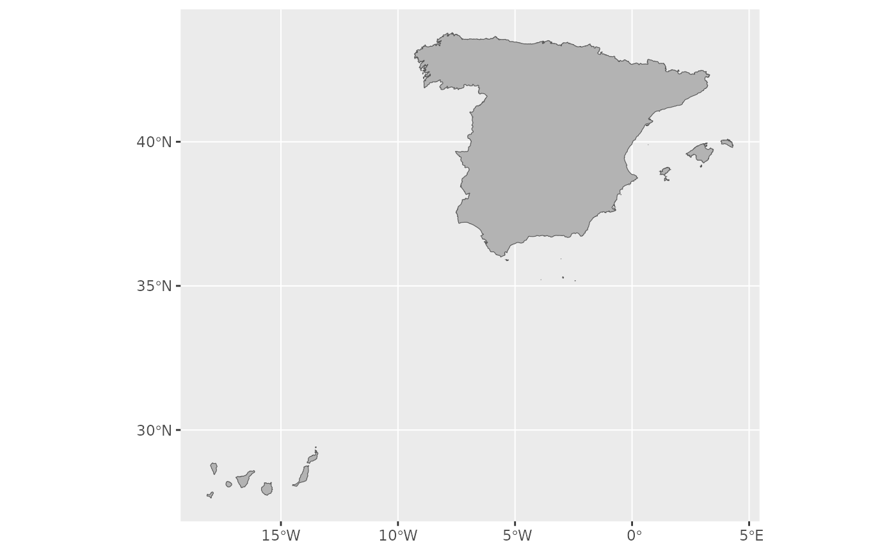
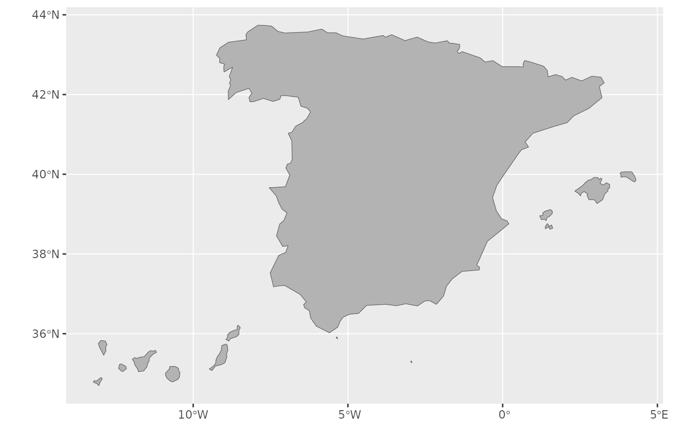

Returns the boundaries of Spain as a single sf POLYGON at a
specified scale.
Arguments
- moveCAN
A logical
TRUE/FALSEor a vector of coordinatesc(lat, lon). It places the Canary Islands close to Spain's mainland. Initial position can be adjusted using the vector of coordinates. See Displacing the Canary Islands inesp_move_can().- ...
Arguments passed on to
esp_get_nutsyearyear character string or number. Release year of the file. See
giscoR::gisco_get_nuts()for valid values.epsgcharacter string or number. Projection of the map: 4-digit EPSG code. One of:
"4258": ETRS89"4326": WGS84."3035": ETRS89 / ETRS-LAEA."3857": Pseudo-Mercator.
cachelogical. Whether to do caching. Default is
TRUE. See Caching strategies section inesp_set_cache_dir().update_cachelogical. Should the cached file be refreshed?. Default is
FALSE. When set toTRUEit would force a new download.cache_dircharacter string. A path to a cache directory. See Caching strategies section in
esp_set_cache_dir().extcharacter. Extension of the file (default
"gpkg"). SeegiscoR::gisco_get_nuts().verboselogical. If
TRUEdisplays informational messages.resolutioncharacter string or number. Resolution of the geospatial data. One of:
"60": 1:60 million."20": 1:20 million."10": 1:10 million."03": 1:3 million."01": 1:1 million.
Value
A sf POLYGON object.
Examples
# \donttest{
OriginalCan <- esp_get_country(moveCAN = FALSE)
# One row only
nrow(OriginalCan)
#> [1] 1
library(ggplot2)
ggplot(OriginalCan) +
geom_sf(fill = "grey70")

# Less resolution
MovedCan <- esp_get_country(moveCAN = TRUE, resolution = "20")
library(ggplot2)
ggplot(MovedCan) +
geom_sf(fill = "grey70")

# }